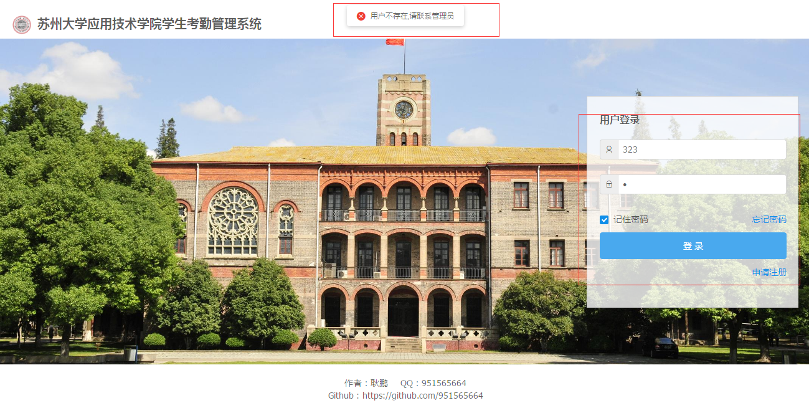
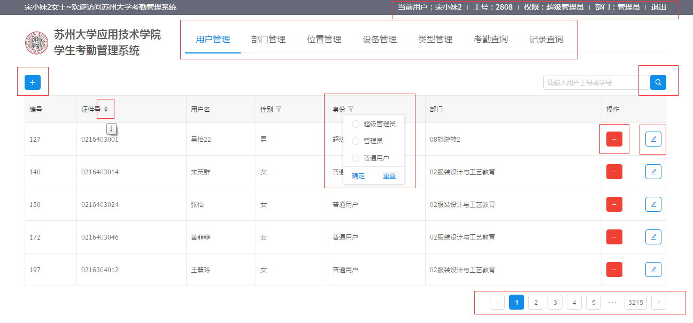
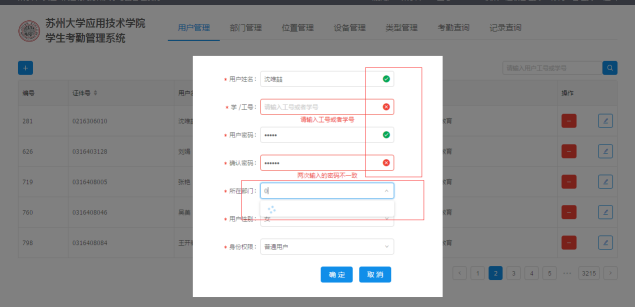

Black (default) -
White -
League -
Sky -
Beige -
Simple
Serif -
Blood -
Night -
Moon -
Solarized
You can select from different transitions, like:
None -
Fade -
Slide -
Convex -
Concave -
Zoom
汇报人 耿鹏
实验考勤管理系统是一个实现考勤管理自动化的系统，代替原先学生手写签到和老师点名记录等方式，节约了人力，高效，快捷。
MVC经典模式
"A JavaScript library for building user interfaces."
"We built React to solve one problem: building large applications with data that changes over time."
"Redux is a predictable state container for JavaScript apps."
"You can only solve the problem that React can not solve it."
dva 是基于现有应用架构 (redux + react-router + redux-saga 等)的一层轻量封装，没有引入任何新 概念，全部代码不到 100 行。( Inspired by elm and choo. )dva 是 framework，不是 library， 类似 emberjs，会很明确地告诉你每个部件应该怎么写。另外，除了 react 和 react-dom 是 peerDependencies 以外，dva 封装了所有其他依赖。dva 实现上尽量不创建新语法，而是用依赖库本身的语法， 比如 router 的定义还是用 react-router 的 JSX 语法的方式
"Node.js® is a JavaScript runtime built on Chrome's V8 JavaScript engine."
"Node.js uses an event-driven, non-blocking I/O model that makes it lightweight and efficient. Node.js' package ecosystem, npm, is the largest ecosystem of open source libraries in the world."
用户管理
部门管理
位置管理
设备管理
考勤查询
考勤分析


